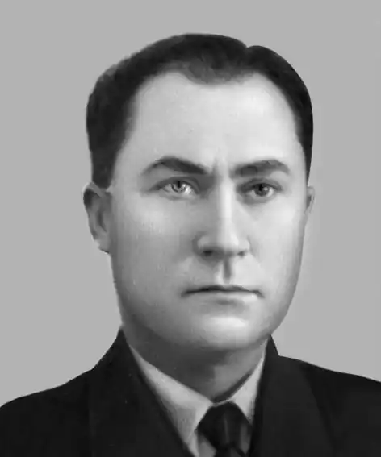

Віктор Володимирович Зубар народився 15 серпня 1923 року у селі Пільний Олексинець Городоцького району Хмельницької області (на той час Кам'янець-Подільської).
Був учасником Другої Світової війни.
По війні, 1947 року закінчив фельдшерсько-акушерську школу в Івано-Франківську. Працював у селах Західної України, а з 1956 року постійно проживав у селі Витилівка Кіцманського району Чернівецької області. Перші віршовані спроби автора опубліковані в обласній газеті "Червоний кордон" 1937 року. Утискувався владою та органами за націоналізм, піддавався критиці компартійними функціонерами відділення Спілки письменників на Буковині. Була заборона на друк його творів у пресі та у видавництвах. Віктор Зубар був активним громадським діячем, одним із перших просвітян Буковинського краю, відданим українським патріотом. Віктор Зубар — відомий український поет, якого благословив у велику літературу Максим Рильський. Він є автором багатьох поетичних книг, драми-феєрії "Вітрова донька" та лібрето однойменної опери, музику до якої написав композитор Юрій Мейтус. Віктор Володимирович Зубар помер 3 вересня 1994 року. Посмертно відзначений Літературною премією імені Дмитра Загула. 1995 року на знак вшанування творчої і громадської діяльності Віктора Володимировича Зубара Кіцманська районна рада на пропозицію громадськості заснувала літературно-мистецьку премію його імені.